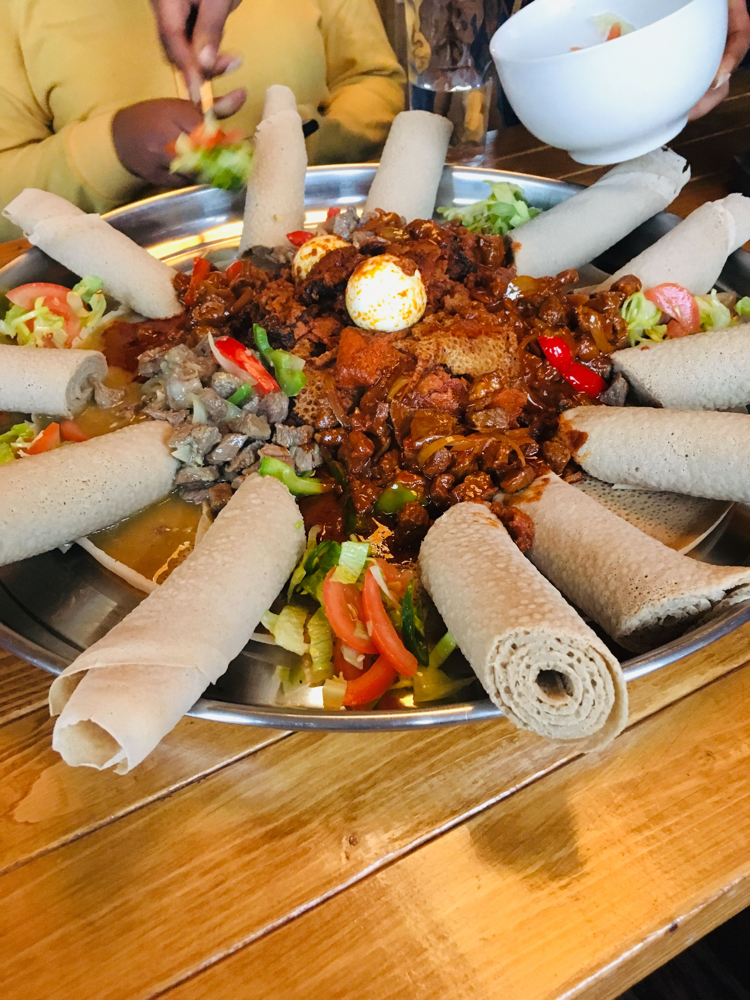

Harun doro wat and lamb stew with veggie stews and injera!

For the spice mix:
- 1 tablespoons chili powder
- 1/2 teaspoons kosher salt
- 1 teaspoon granulated garlic
- 1 teaspoon granulated onion
- 1 teaspoon ground cumin
- 1/2 teaspoon dried oregano
- 1/4 teaspoon black pepper
- Pinch of cayenne pepper (optional)
For the nachos:
- 1 teaspoon vegetable oil
- 1 pound ground beef (80:20 lean-to-fat ratio)
- 16 ounces (2 cups) refried beans, canned or homemade
- 1/4 cup water
- 1 large bag of tortilla chips
- 4 ounces cheddar cheese, grated (about 2 cups), plus more for topping
- 4 ounces Colby Jack cheese, grated (about 2 cups), plus more for topping
- 1 cup pico de gallo, store-bought or homemade, plus more for topping
- 1/4 cup chopped cilantro
- 1 jalapeño (pickled or fresh), sliced
Optional toppings:
- Guacamole
- Salsa
- Sour cream
- Canned black olives
- Sliced green onions
- Shredded lettuce
- Corn
- Hot sauce
Method
- Preheat the oven to 350°F.
- Make the taco spice blend:
- Combine all of the spices (chili powder through cayenne) together in a small bowl.
Make the beef and bean topping:
- Heat the vegetable oil on medium high heat until it begins to shimmer. Add the ground beef to the pan and
season it with all of the taco spice blend. As the meat cooks, use a spoon to break the meat up into
crumbles.
- Cook for about 8 minutes until the meat has browned and drain the fat using a colander.
- Return the meat to the pan and add the refried beans and the water. Heat the mixture until the beans are
smooth and warmed through. Reduce the heat to low and keep the beef-bean mixture warm while you prepare the
chips.
Simple Nachos recipe
- Toast the chips:
- On a 13x18-inch oven-safe platter or sheet pan, arrange the tortilla chips in a single layer, overlapping
them slightly. Toast the chips in the preheated oven for 5 minutes, or just until you begin to smell their
aroma.
- Beef nachos recipe
- Assemble and bake the nachos:
- Carefully remove the pan from the oven and top with one half of the shredded cheeses. Allow the heat from
the chips to melt the cheese slightly before topping the chips with the beef and bean mixture.
- Sprinkle the remaining cheese over the beef and return the pan to the oven for 5 minutes, or until the
cheese has fully melted.